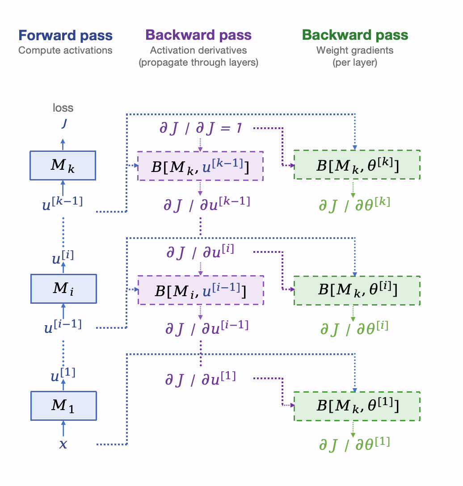

Lecture 8: Neural Networks, Backpropagation
Video blocked (ad-blocker or local file mode).
Watch on YouTubeVideo not loading? Watch on YouTube
Original lecture. Tengyu Ma proves the backprop complexity theorem and derives the module-wise backward functions.
How to read this lesson
This lesson has two levels. Level 1 (Core) contains what you need to understand everything that follows in CS229 and the courses that build on it. Level 2 (Deep) contains what you need for correct, interview-grade understanding. Read Level 1 straight through. Return to Level 2 when you want depth.
No prerequisites are assumed. Every term is defined at first use. The neuron, MLP, and residual block were defined in lecture 7; they are reused, not re-explained.
Level 1: The fundamental theorem
Training needs the gradient of the loss with respect to every parameter. A modern network has billions of parameters. Computing a billion derivatives sounds like it should cost far more than one forward pass. It does not.
The theorem: both the forward pass (evaluating the loss) and the gradient computation run in time linear in the number of parameters 11:00 ⏱11:00. O(N) for the loss, O(N) for all N derivatives. The lecture’s main job is proving this and showing the algorithm that achieves it: backpropagation.
The proof idea is composition. A network is a chain of modules M_1 … M_k: matrix multiplies, activations, normalizations. The forward pass computes each module’s output in turn. The backward pass walks the chain in reverse, and each module does a fixed amount of work proportional to its own size. Sum over modules: O(N). No module ever needs to know the whole network.
Each module’s backward step costs proportional to that module’s parameter count, not the network’s. The chain rule factors the full gradient into local pieces, one per module. Summing local costs over all modules gives O(N) total. The naive alternative, perturbing each parameter and remeasuring the loss, costs O(N) forward passes: O(N^2). Backprop’s trick is sharing work across parameters. Yes. Backprop costs roughly 2x a forward pass: one forward sweep plus one backward sweep of similar size. Training step budgets in large runs assume this 3x ratio (forward plus backward plus optimizer). The theorem gives the scaling. Engineering gives the constant.
Level 1: Modules and backward functions
Each module M has a forward function and a backward function 26:53 ⏱26:53. Forward: given input x, compute output u = M(x). Backward: given the gradient of the loss with respect to the output, dJ/du, compute the gradient with respect to the input, dJ/dx.
The backward function is the chain rule 17:59 ⏱17:59: dJ/dx = (transpose of the Jacobian of M) times dJ/du 23:35 ⏱23:35. The Jacobian is the matrix of all partial derivatives of the output with respect to the input. You never form it fully. Each module implements its own backward directly, using only its local math.

The seed of the backward pass is dJ/dJ = 1 at the loss. Walk it back through every module. Two streams emerge: activation derivatives that propagate through layers, and weight gradients collected per layer. The modules need not match: matmul, sigma, LayerNorm each bring their own backward. Compose them and the chain rule handles the rest.

For a module with forward u = M(x), the backward function takes the incoming gradient dJ/du and returns dJ/dx = J_M^T · dJ/du, where J_M is the module’s Jacobian. For a matrix multiply it is a matrix-vector product. For an elementwise activation it is elementwise multiplication by the derivative. Each module author writes one backward, and the chain rule composes them. Dimensions. dJ/du is a row-like object over outputs; dJ/dx must be row-like over inputs. The Jacobian maps input-directions to output-directions, so pulling a gradient back through it needs the transpose. In code this is just the right multiplication order. The transpose is bookkeeping, not deep mathematics.
Level 1: The gradient is rank 1
A gem from the lecture. For one training example and one weight matrix, the gradient dJ/dW is always rank 1 55:00 ⏱55:00: an outer product of the error vector and the input vector.

This is the error-times-input pattern from lecture 2, grown up. The gradient is not a generic matrix. It has structure: every row is a scaled copy of the input. Efficiency methods exploit this fact to compress updates. With many examples the gradients average and the rank grows, but the per-example structure is the building block.
For activations the backward is even simpler. Elementwise activation means each output depends only on its own input, so the Jacobian is diagonal 57:37 ⏱57:37: sigma’(z_i) on the diagonal, zeros elsewhere. Backward through an activation is elementwise multiplication by the derivative. No matrix needed.
It says gradients carry far less information than their size suggests. A d-by-d weight gradient from one example has d^2 entries but only 2d degrees of freedom. Update-compression and low-rank adaptation methods exploit exactly this. It also explains why gradient noise has structure: the noise lives in a low-dimensional subspace per example. No. The minibatch gradient is the average of per-example rank-1 matrices, and the average of rank-1 matrices is generally full rank. The rank-1 property is per example. Methods that exploit it must handle the averaging explicitly.
Level 2: Apply it twice. Second-order methods
The module construction applies twice. Take one gradient step: theta’ = theta - alpha * grad J(theta). Evaluate J(theta’). Now differentiate with respect to theta. Theta appears twice: directly, and inside theta’. The backward functions compose again, at about 3x the parameter cost. This is the basis of second-order methods 13:09 ⏱13:09: Hessian-vector products without ever forming the Hessian.
Applications: meta-learning (differentiate through the learning step itself), hyperparameter gradients, and curvature-aware optimizers. The point is not the applications. It is that backprop is a general differentiation engine for composed computations, not just a neural network trick. Any differentiable program gets O(N) gradients.
Level 2: Vectorization over examples
The lecture closes by batching the whole construction over training examples. Stack examples into matrices. Every module’s forward and backward becomes matrix math. GPUs do matrix math fast. This is why minibatch training from lecture 2 is not just statistics: it is also the unit of efficient computation. The mathematics of backprop and the hardware of GPUs agree on the batch as the atomic workload.
Recap: the whole lesson on one screen
Eight ideas carry this lecture. Read each card. Say the core sentence out loud. If you can, you own the lesson.
Forward pass and full gradient both cost linear in parameter count. Backprop achieves it. Finite differences would cost O(N^2).
Key: both O(#params)
Matmul, activation, norm: each with a forward and a backward. Sum of local costs is O(N). Modules need not match.
Key: M_1 ... M_k, forward then back
dJ/dx = J_M^T dJ/du. Each module implements its own. Seed with dJ/dJ = 1. The chain rule does the rest.
Key: local backward, global composition
dJ/dW = error outer input. The error-times-input pattern, grown up. Averaging over examples raises the rank.
Key: outer product structure
Elementwise means the Jacobian is diagonal: sigma'(z_i) only. Backward is elementwise multiply. No matrix needed.
Key: multiply by sigma'(z)
Differentiate through a gradient step. Hessian-vector products at ~3x cost, no Hessian formed. Meta-learning lives here.
Key: backprop is a general engine
Activation derivatives propagate through layers. Weight gradients are collected per layer. Both come from one backward walk.
Key: propagate dJ/du, collect dJ/dW
Stack examples into matrices. Module math becomes matrix math. GPUs agree with the statistics: the minibatch is the unit of work.
Key: vectorize over examples
Official sources and further reading
Official: - Lecture 8 video: O(N) theorem 11:00 ⏱11:00, chain rule 17:59 ⏱17:59, transpose Jacobian 23:35 ⏱23:35, backward function 26:53 ⏱26:53, rank 1 55:00 ⏱55:00, diagonal activation backward 57:37 ⏱57:37, second-order basis 13:09 ⏱13:09. - CS229 Spring 2026 official course notes: backpropagation chapter; the module figure above is from it.
Further reading: - Rumelhart, Hinton, and Williams (1986), “Learning representations by back-propagating errors”: the paper that made backprop famous. - Griewank and Walther, Evaluating Derivatives: the general theory of automatic differentiation.
Caveats from these sources. The O(N) theorem counts arithmetic operations, not memory: storing activations for the backward pass costs memory linear in depth times batch size, which is the real bottleneck at scale. The rank-1 fact is per example; minibatch gradients are full rank. Second-order via double backprop costs extra memory for the computation graph.
Connections to the other courses
- CS336: every transformer training step is this lecture’s backward walk at billion-parameter scale; the 3x forward-backward cost ratio governs training budgets.
- CS224N: backprop through time is the same chain rule unrolled over sequence steps.
- CS329H: policy gradients differentiate through sampling, and the module view explains why the score-function estimator composes.
Backprop cheatsheet. Theorem: forward O(N), gradient O(N). Modules M_1..M_k each with forward and backward. Backward: dJ/dx = J_M^T dJ/du; seed dJ/dJ=1. Rank-1: one example, one W gives error outer input. Activations: diagonal Jacobian, elementwise multiply by sigma’(z). Twice: Hessian-vector products ~3x, basis of second-order methods. Batch everything into matrices.
Share the work. Backprop’s whole trick is that N derivatives share one backward walk. Whenever a computation looks like it needs N separate passes, ask what walk they could share.
Sources
- VIDEOLecture 8 video, Stanford Online YouTube
- NOTESOfficial subtitle transcript (en-US)
- NOTESCS229 Spring 2026 official course notes (local PDF)